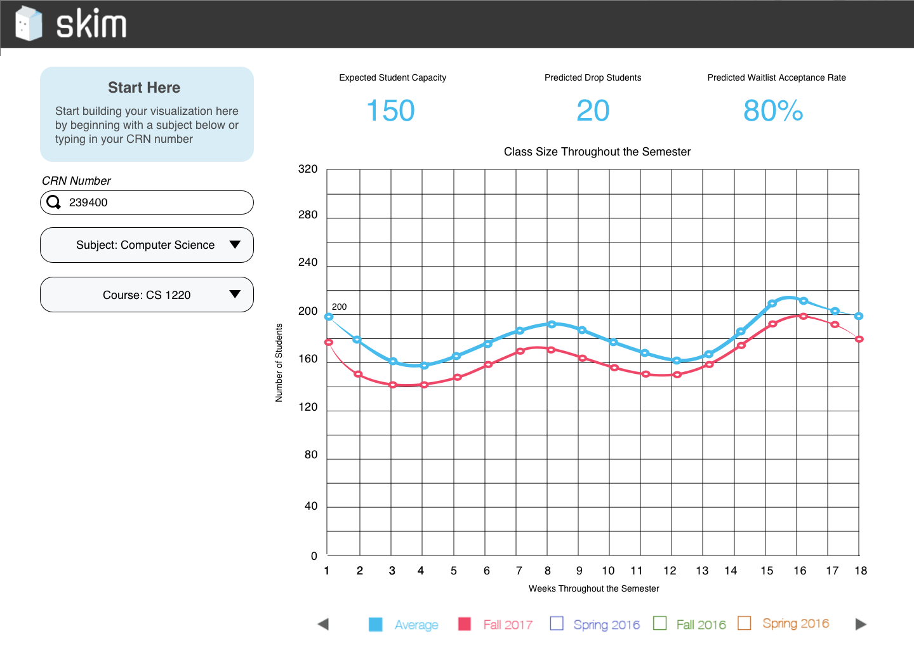
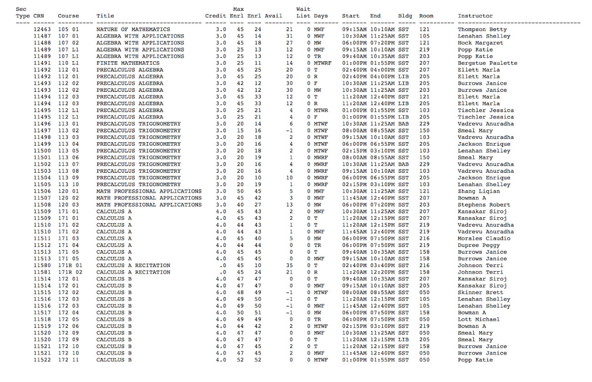
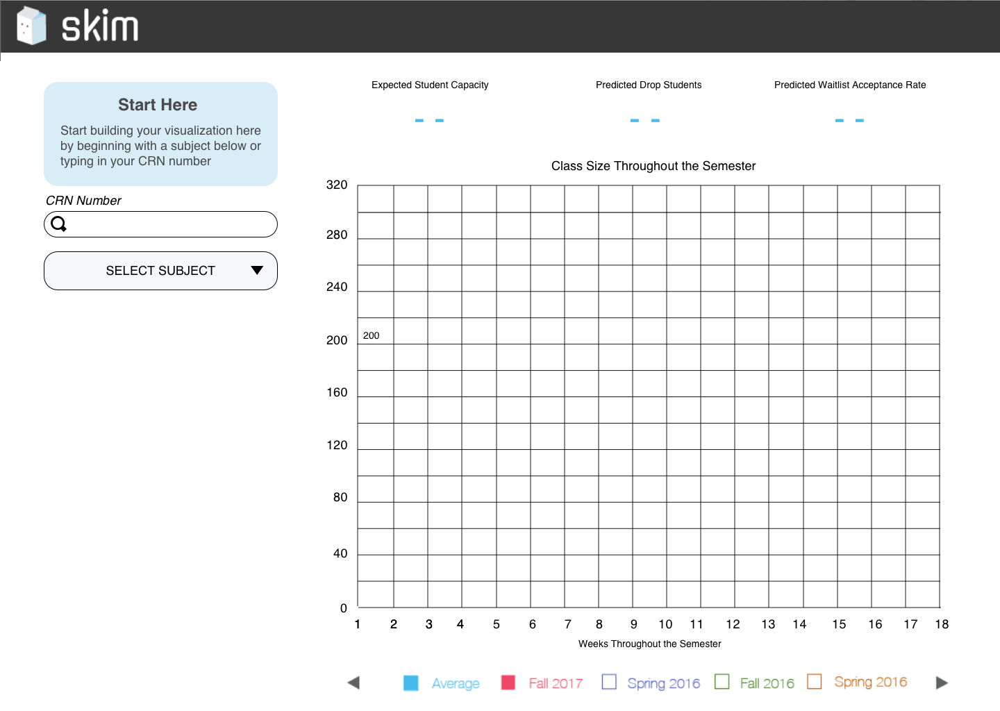

Junior Design is a two semester class at Georgia Tech. This class requires a team of 5 people, constant communication with a client, deliverables and each member has a role to fulfill.

Our team project included working with the University of Alabama and their administrators office. We specifically evaluated the class enrollment at UAB. Students would sign up for a course in the beginning of the semester and then drop the class later in the semester. Because of the fluctuation in class size, administrators would often open up or close class sections unnecessarily. Even though all the data is available, the results are hard to evaluate and base decisions on. This lack of predictive analytics leads to inefficient use of administrators time and classroom utilization.

Our team decided to build an application that creates a data visualization using past enrollment and waitlist data. We wanted the application to be able to filter/search, provide accurate statistics and predictions on class capacity. We choose a web application because it suits our administrator’s needs and it’s easy to use.

The first important part of the page is branding. We went with calling our platform skim, to allude to the idea you could “skim” for the optimal class combinations to best allocate classrooms and teachers based on student need. The branding is a play on words of skim to refer to skim milk, and adds a layer of friendly and personified branding through the skim milk mascot. We took inspiration from courseoff.com for Georgia Tech and how the class scheduling works on that platform.
Users can either search for the course, our the fields will autopopulate when the user inputs a CRN number.We utilized a dashboard for quick information access per filtered class. The dashboard includes Dashboard expected student capacity, predicted dropped students, and waitlist acceptance rate. The graph Comparing semesters to the average, will allow us to better predict whether or not we need to open another course. The average line is default.